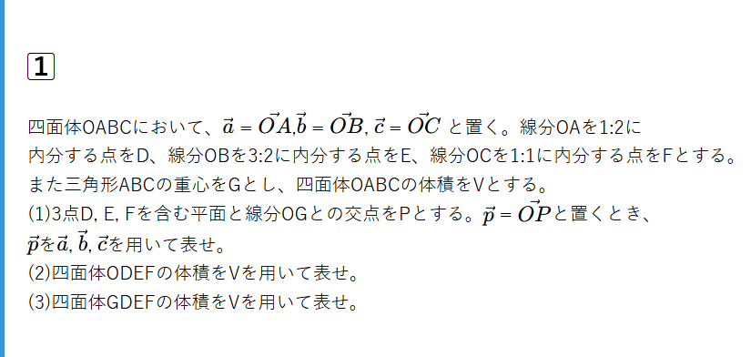

方針
(1) \(\vec{OP}\) を平面と直線から表す。
(2) 共通の頂点を持つ体積の比→辺の比
(3) 共通の底面を持つ体積の比→高さの比
ベクトルではすべてのベクトルを基準ベクトルで表すようにする。
今回の基準ベクトルは \(\vec{a}\), \(\vec{b}\), \(\vec{c}\) である。
基準ベクトルであらわす。
\(\vec{OD}\), \(\vec{OE}\), \(\vec{OF}\), \(\vec{OG}\)を基準ベクトルで表すと、 $$ \vec{OD} = \frac{1}{3}\vec{a}, \vec{OE} = \frac{3}{5}\vec{b}, \vec{OF} = \frac{1}{2}\vec{c}, \vec{OG} = \frac{1}{3}(\vec{a} + \vec{b} + \vec{c}) $$
(1) \(\vec{OP}\)を \(\vec{a}\), \(\vec{b}\), \(\vec{c}\)で表す。
点Pは直線OG上にあり且つ、平面DEF上にある。
(ⅰ)直線OG上の点をRとする。実数r(0 ≦ r ≦ 1)を用いて$$ OR : RG = r : 1-r $$
とできる。したがって\(\vec{OR}\)は
$$ \vec{OR} = r \vec{OG}$$
と表せる。整理すると、
$$ \vec{OR} = \frac{r}{3} (\vec{a} + \vec{b} + \vec{c}) \qquad ① $$
(ⅱ)平面DEF上の点をQとすると、実数s,tを用いて
$$ \vec{OQ} = \vec{OD} + s \vec{DE} + t \vec{DF} $$
である。整理すると
$$ \vec{OQ} = \frac{1}{3}(1 - s - t)\vec{a} + \frac{3}{5} t \vec{b} + \frac{1}{2}s\vec{c} \qquad ②$$
点Rと点Qが一致するその点が点Pとなるので①②より
$$ \begin{cases} \frac{r}{3} = \frac{1}{3}(1 - s - t)\\ \frac{r}{3} = \frac{3}{5}t\\ \frac{r}{3} = \frac{1}{2}s \end{cases}$$
計算し、pまたはs,tを求めると、
$$ p = \frac{3}{20} , s = \frac{3}{10} , t = \frac{1}{12} $$
よって\(\vec{OP}\)は$$ \vec{OP} = \frac{3}{20} (\vec{a} + \vec{b} + \vec{c}) $$
(2)四面体ODEFの体積
四面体OABCと共通の頂点Oを持つ→ 辺の比から体積を考える。
四面体ODEFの体積をKとすると、$$ K = \frac{OD}{OA} ・ \frac{OE}{OB} ・ \frac{OF}{OC} ・V$$ とできる。\(\frac{OD}{OA}\) = \(\frac{1}{3}\), \(\frac{OE}{OB}\) = \(\frac{3}{5}\), \(\frac{OF}{OC}\) = \(\frac{1}{2}\)であるので計算すると、
$$ K = \frac{1}{3} ・ \frac{3}{5} ・ \frac{1}{2} ・V = \frac{1}{10}V $$
(3)四面体GDEFの体積
四面体ODEFと四面体GDEFは共通の底面DEFを持つ→高さの比から体積を考える。
OP : PG = \(\frac{9}{20}\) : \(\frac{11}{20}\) = 9 : 11なので四面体GDEFの体積をLとすると
$$ L = \frac{11}{9} ・ \frac{1}{10}V = \frac{11}{90}V $$
重要Point
(1) 直線と平面の交点を表す問題。直線と直線の交点や直線と平面の交点を表す問題は 基本、点の一致を考える。 平面上を動く点(今回のQ)と、直線上を動く点(今回のR)が一致、即ち $$ \vec{OR} = \vec{OQ} $$ を第一目標にできたかが重要。これがわかれば\(\vec{OR}\), \(\vec{OQ}\)を基準ベクトルで表し係数を比較して解ける。 変数を三つ設定することになり不安になるかもしれないが、係数を三個で比較すると気付けるようになれば安心である。 頻出の考え方なので抑えておこう。
(2) 辺の比から体積を考える問題。大きな四面体を切ってできるような四面体の体積を考えるときは基本これ。共通している部分が何かわかると 何によって体積が決まっているかわかる。(今回は辺の比)これに関して比例式を立てると簡単である。
(3) 高さの比から体積を考える問題。底面が共通しているので高さによって体積が決定する。